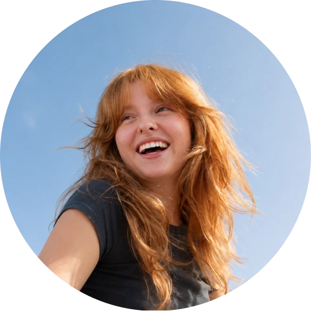
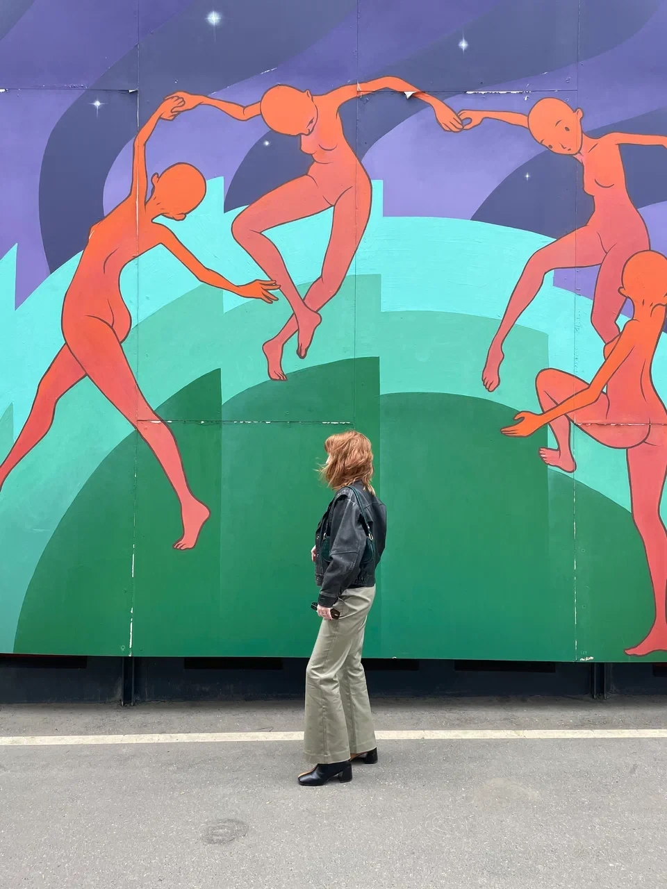
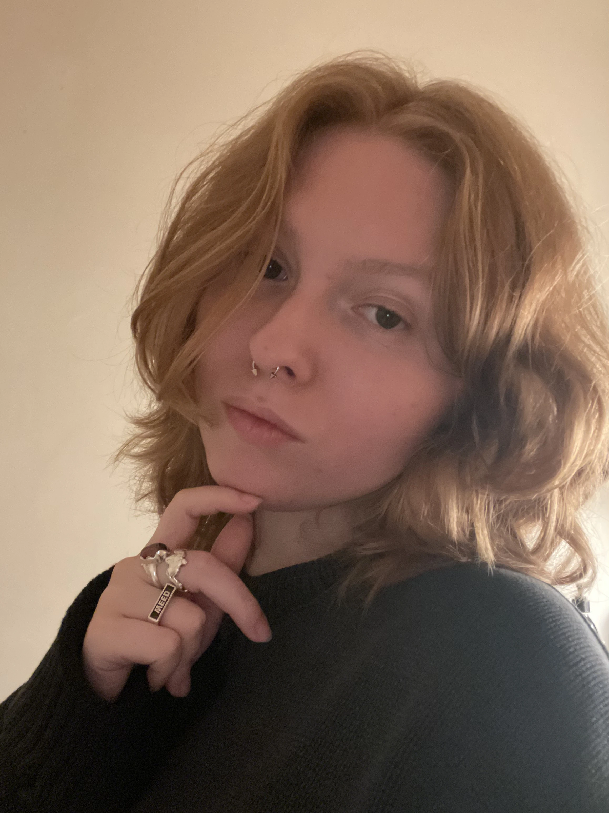

Маруся Шебанова,
веб и продуктовый дизайнер
Дизайню для брендов и экспертов, рассказываю про дизайн‑мышление и вдохновение для коллег. Открыта к сотрудничеству
Опыт
В дизайне я около 5 лет. Работала в студии, в стартапе, в Т-Банке. Реализовала больше 50 проектов
Что умею
Награды
- 4 Made on Tilda
- 2 CSSLight Featured
- 2 Uprock Gallery
- 1 Dprofile
- 5 место в Alfa Design Challenge
Проекты


Как будем работать
знакомство
прототипмудборддизайн
передача проекта
Поэтапно
Работаю по отлаженному процессу, который упрощает согласование и минимизирует риски и правки

Объясняя решения
После каждого этапа записываю небольшое видео-пояснение, чтобы объяснить все свои задумки


Прозрачно
Под каждый проект создаю Notion‑пространство с материалами и процессом реализации, чтобы вы всегда были в курсе апдейтов

Официально
Заключаю с клиентами договора, чтобы у вас по бухгалтерии все было четко (ㅅ´ ˘ `)
Дизайнерам
 ◕⩊◕
◕⩊◕1
Цех аналитики
Практический курс по аналитике для веб и продуктовых дизайнеров.
За 7 недель пройдешь путь от задачи бизнеса до прототипа, в котором сможешь объяснить и защитить все свои решения. Научишься исследовать потребности пользователей, проверять гипотезы и связывать решения в интерфейсе с целями продукта. Смотреть программу
2
Консультации
Как проходят
- Списываемся, обсуждаем вводные и запрос. Формируем план созвона. Назначаем дату
- Готовлю презентацию, которая остается у вас. Длительность созвона 1,5–2,5 часа. Могу дать задание на отработку (зависит от запроса)
- В течение недели после созвона можете тормошить меня по любым вопросам по теме. Если было задание на отработку — проверяю, обсуждаем
Провожу консультации для веб / продуктовых и иногда граф. дизайнеров. Записаться можно в тг
3
Полезные материалы
Записываю длинные видео с ответами на вопросы, которыми задавалась в начале пути и сейчас: развитие, аналитика, тексты, вайбкодинг. Смотреть видео
Периодически выкатываю статьи по дизайн тематике. Уже есть про работу в Миджорни, как составлять ТЗ, где учиться дизайну. Читать тут


Познакомимся поближе?
Я Маруся, дизайнер с опытом менеджера, редактора, предпринимателя, препода и блогера (˶ᵔ ᵕ ᵔ˶)
Интересные факты
- Окончила Плешку по направлению «Бизнес менеджмент» с красным дипломом
- Английский — C1 (IELTS)
- Полностью прошла Хогвартс Легаси
- За спиной 6 классов фортепиано (закончила экстерном)
- Была в 22 странах и на краю света
- Рыжий — мой натуральный цвет
- Раньше занималась биатлоном и хотела посвятить жизнь спорту (накатала на 2-ой взрослый разряд)